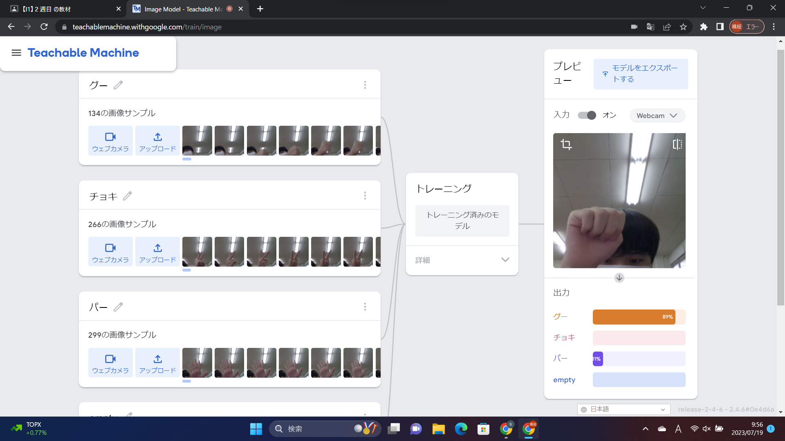
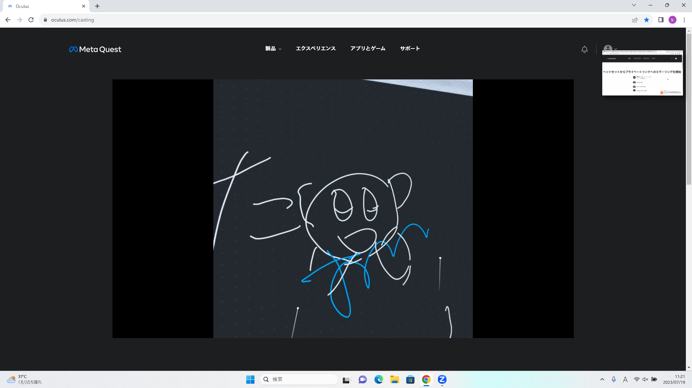

第2週目
2-1 １週目のレポートをHTMLで作る
１週目のレポート
1.内容
一週目にしたスクラッチの内容と感想、ホームページを作成した内容と感想が載っている。
見やすくなるように文を改行している。
2.感想
まだ文字だけしか書くことができないが、自分なりに見やすくなるように工夫したりして
どんどん内容を追加するたびにホームページが完成に近づくのが楽しかった。
2-2 機械学習体験

1.内容
カメラに写っている画像を事前に撮影した画像から、今何が写っているのかを判断するAIを使用した。
グーが写るとグーと表示し、パーならパー、チョキならチョキ、何もなければemptyと表示する。
2.感想
体験授業で同じことをしたが、前よりも授業で言っていることが分かるようになって自身の成長を実感した。
今は使うことしかできないが、数学で学ぶと聞いて理解できるのか少し心配になった。
2-3 VR（バーチャルリアリティー：Virtual Reality）会議室の体験

1.内容
仮想空間上で自身のアバターを介し、コントローラーを使うことで仮想空間で会話や絵などをかくことができる。
コントローラーを使い、現実空間に座標を設定し、その範囲内で絵を描くことができる。
2.感想
VRを使ったのは初めてで、現実と区別がつかないほどではないが、現実とは違った世界でとても新鮮だった。
現実にないもがVRゴーグルを通して見ることができ、現実で起こした動作が仮想空間上に反映されるのが最初
はなかなか感覚がつかめなかったが、直感的に操作ができるためなれるのにはあまり時間はかからなかった。
VRは知識としては知っていたが、実際に体験してみるとそのすごさが伝わってきて未来への可能性を感じた。